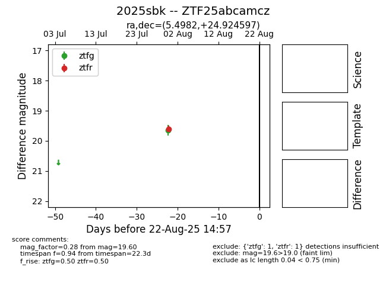

Target 2025sbk at 2025-08-21 11:20, see:
FINK: fink-portal.org/ZTF25abcamcz
Lasair: lasair-ztf.lsst.ac.uk/objects/ZTF25abcamcz
ALeRCE: alerce.online/object/ZTF25abcamcz
TNS: wis-tns.org/object/2025sbk
YSE: ziggy.ucolick.org/yse/transient_detail/2025sbk
alt names
ZTF25abcamcz (ztf,alerce)
2025sbk (tns,yse)
coordinates:
equatorial (ra, dec) = (5.4982,+24.92460)
galactic (l, b) = (114.5141,-37.46540)
photometry
last ztfg=19.65, ztfr=19.60
1 ztfg, 1 ztfr detections
